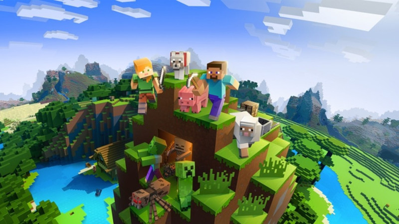
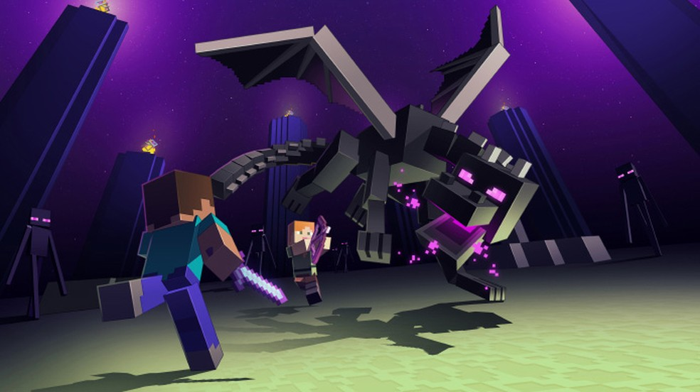

Historia do jogo Minecraft
Minecraft é um dos maiores jogos da última década. O fenômeno independente tomou a indústria de surpresa e popularizou mecânicas de sobrevivência e criação de itens em vários outros games. O que muitos fãs do jogo talvez não saibam é que ele foi criado por apenas uma pessoa e se tornou o jogo mais vendido de todos os tempos. Confira algumas das principais perguntas e respostas sobre o popular game de blocos para Xbox One, PlayStation 4 (PS4), Nintendo Switch, Android, iPhone (iOS) e PC.
Quando Minecraft foi lancado e quem criou
A primeira vez que Minecraft surgiu na internet foi em 2009, como um projeto online do programador sueco Markus "Notch" Perssono versão "Classic". O usuário podia mexer nos blocos, mas ainda não havia os elementos de sobrevivência que tornariam a série tão popular. O jogo ficava disponível de graça, mas era possível comprar essa versão do game em um modelo inédito, no qual investia-se no jogo incompleto para continuar recebendo as atualizações futuras sem pagamentos extras. Foi o nascimento do modelo "Early Access" ou "Acesso Antecipado".

Em 18 de novembro de 2011, após várias atualizações, finalmente, Minecraft chegou à versão "1.8" e foi lançado oficialmente para PC. Essa foi a primeira versão do game que trazia um final, com a grande batalha contra o Ender Dragon. Apesar disso, outras atualizações foram lançadas posteriormente, expandido cada vez mais a aventura. Em 2012, a primeira edição para consoles foi chegou ao Xbox 360 e repetiu nos videogames todo o sucesso do PC. A série foi vendida para a Microsoft em 2014 e Notch afastou-se do jogo, o qual ficou a cargo de sua antiga companhia, a Mojang.
Qual e a historia do jogo
Um dos pontos mais curiosos sobre Minecraft é que ele não tem uma história tradicional. No início do game, os jogadores simplesmente surgem nesse mundo, sem passado, sem explicação sobre quem são e mesmo que encontrem habitantes de vilas, eles não irão falar nada sobre sua situação. Apesar de tudo, há um objetivo principal, viajar para uma outra dimensão e matar o Ender Dragon, um dragão misterioso que tem alguma relação com os Enderman.

Quando o jogador finalmente consegue matar o Ender Dragon e atravessar o portal para voltar para casa, aparecem os créditos e um enigmático poema. No texto, duas entidades conversam entre si enquanto insinuam que o jogador pode ler os pensamentos delas agora que chegou tão longe. O poema, no entanto, não explica muito sobre o mundo de Minecraft e deixa o jogador com mais perguntas do que respostas.